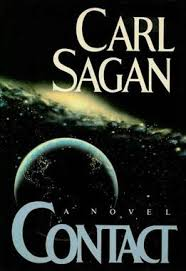
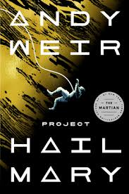
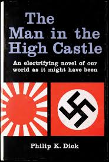
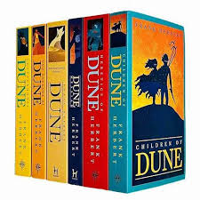
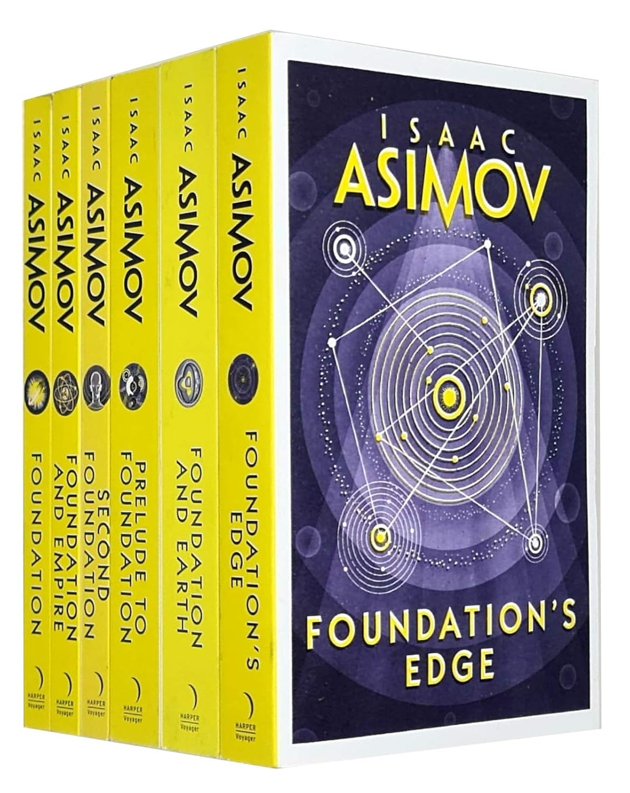
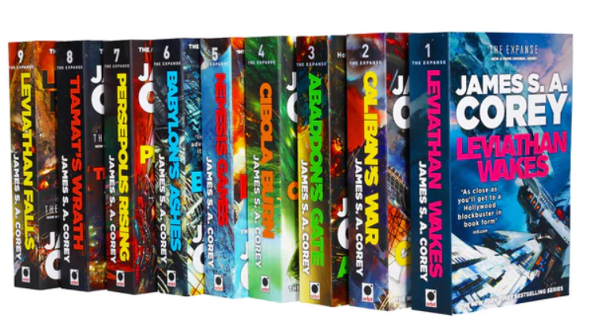

Voyagez au-delà des étoiles, plongez dans des technologies avancées et imaginez le futur de l’humanité

Un astronome reçoit un message d'une civilisation extraterrestre intelligente et commence un profond voyage scientifique et philosophique. Un roman écrit par un véritable astrophysicien, mêlant fantaisie et pensée scientifique réaliste.

Un homme se réveille dans un vaisseau spatial sans aucun souvenir et découvre qu'il est le dernier espoir de sauver la Terre de l'extinction.
Dans un monde apparemment normal, les enfants d'un pensionnat découvrent une horrible vérité sur leur sort.

Et si l’Allemagne et le Japon avaient gagné la Seconde Guerre mondiale ? Le roman imagine l’Amérique sous le règne des nazis et de l’Empire japonais.

Dans un monde désertique et hostile, les familles se disputent une substance rare qui confère pouvoir et prophétie.

Un mathématicien prédit la chute d'un empire galactique et tente de sauver la civilisation grâce au plan « Fondation ».

Dans le futur, l’humanité s’est étendue dans le système solaire et les conflits entre la Terre, Mars et les astéroïdes commencent à s’intensifier.
Sept inconnus voyagent dans un monde lointain où un destin mystérieux et une entité appelée « Le Shrek » les attendent.